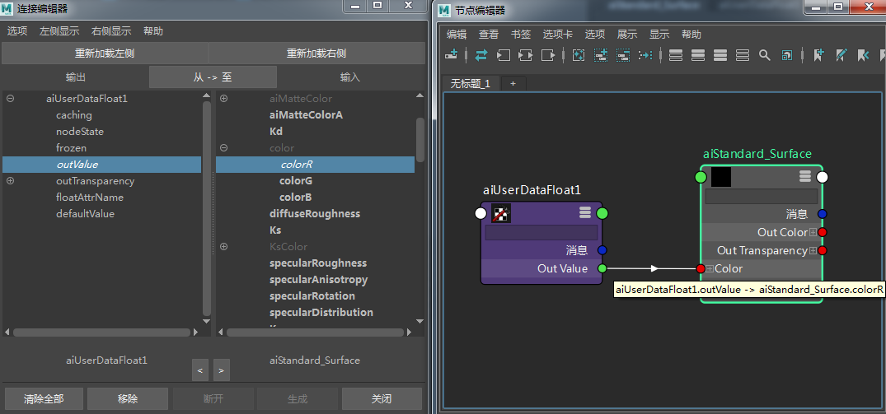
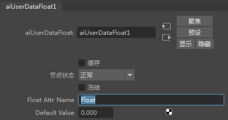
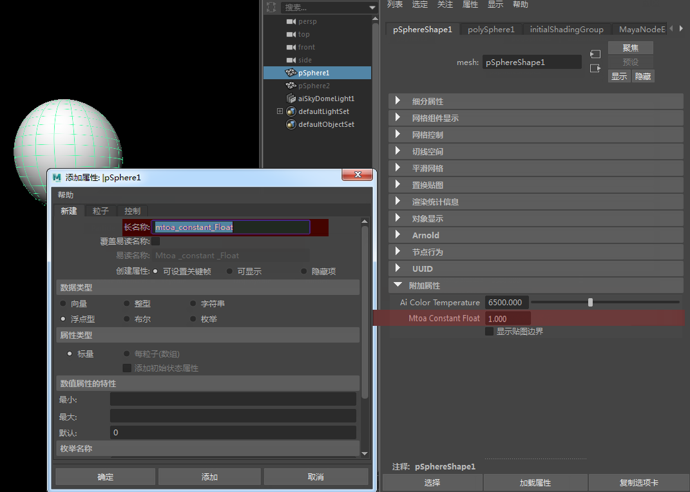
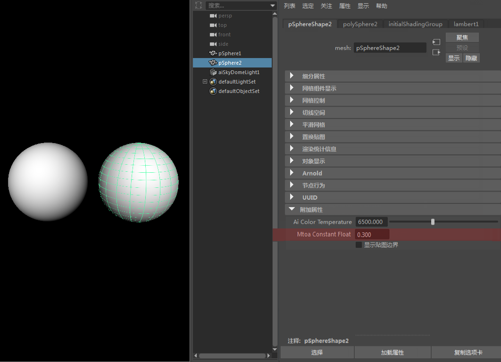

本简短教程介绍如何使用 Ai 用户数据浮点着色器。
要下载对应的 Maya 场景，请单击此处。


创建一个球体，并为其添加一个属性（形状节点，不是变换节点）。按照命名约定“mtoa_constant_”进行命名，后跟为 Ai 用户数据浮点节点指定的相同名称“Float”。因此，最终得到的属性名为“mtoa_constant_Float”。
在球体的附加属性中，应该能看到新的“mtoa_constant_Float”属性，其值为 1。

